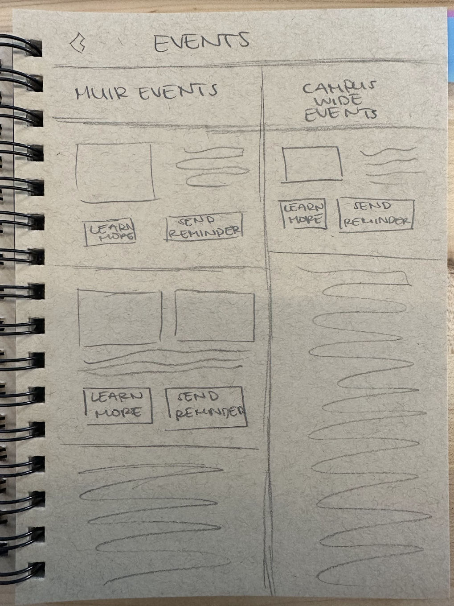

-
5 | năm
-
Designing UI and a kiosk exterior for UCSD's Muir College.
Create low-fi paper-prototype to conduct user research and trials.
Collaborate with designers to brainstorm and finalize kiosk exterior.
Continue to iterate the UI and exterior of the kiosk to be inline with Muir College's moto.
Creating more opportunities for student engagement and ways to foster pride.
wood carving | figma | illustrator